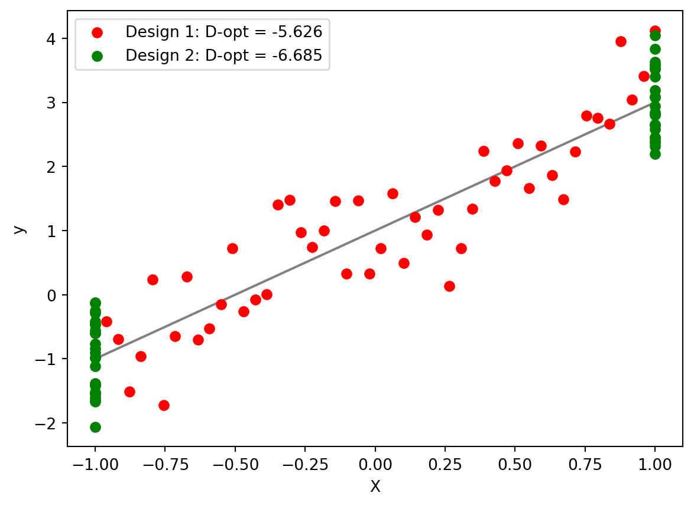

import matplotlib.pyplot as plt
import numpy as np
# set up some simulation code
B0 = 1
B1 = 2
variance = 0.25
N = 50
np.random.seed(123)
# define some functions to calculate D-optimality
SSx = lambda x: np.sum((x - np.mean(x))**2)
D_opt = lambda x: np.log(variance**2/SSx(x))
# simulate some response data
y_true = lambda x: B1 * x + B0
y_error = lambda x: y_true(x) + np.random.normal(scale=np.sqrt(variance),size=N)Designing experiments is as much of an art as it is a science, and in order to get the best insights from our data, statisticians and data scientists need to find creative ways to maximize the significance of their results. Optimal design theory gives us ways to design experiments that minimize the error in our experiment. I’ll talk a bit about where optimal design can be used, and show a simple example using simple linear regression.
What is Optimal Design? When can I use it?
Imagine you’re working for an agriculture company, and you want to know how the concentration of a new fertilizer in soil affects the growth rate of crops after four months. We only have the budget to afford fifty seedlings to answer this question, so we will set up the following experiment:
- Arrange each of our 50 seedlings in their own isolated planter.
- Give each planter some concentration of fertilizer.
- After four months, measure the growth of each plant.
- Fit a regression line with the response as growth rate, and the explanatory variable as fertilizer concentration:
\[ \texttt{growth rate} = \beta_0 + \beta_1 \times \texttt{fertilizer concentration} + \epsilon_i \\ \epsilon_i \sim \mathcal{N}(0, \sigma^2) \]
The parameter \(\beta_1\) is the slope of this line, which tells us how fertilizer concentration changes with growth.
We add \(\epsilon_i\) to account for deviations between our line and the data, and \(\sigma\) is the standard deviation of this error.”}
Informed Experiment Designs
We need to pick concentration levels that minimize parameter errors, and this is where optimal design comes in. We need to ‘squish’ the error of our parameters \(\beta_0\) and \(\beta_1\) into one single, summarizing value. To do this, we will use the D-Optimality Criterion, which, for our model, has the equation:
\[ \texttt{D-Optimality} = \frac{\sigma^4}{SS_{(\text{fertilizer growth})}} \]
For the math-savvy readers, this is the determinant of the covariance matrix of \(\beta_0\) and \(\beta_1\).
We want to minimize the D-Optimality criterion to get the lowest error in our parameters, so the bottom term, \(SS_{(\text{fertilizer growth})}\), needs to be as large as possible. This is the sum of squared deviations in our 50 fertilizer growth levels:
\[ SS_{(\text{fertilizer growth})} = \sum_{i=1}^{50} (\text{fertilizer growth}_i- \text{mean fertilizer growth})^2. \]
So, to optimize our experiment, we should pick soil concentrations that are as far away as possible from their mean value. This means we should have 25 plants with no soil concentration, and 25 points at the maximum possible concentration. Let’s set up some code to test this result. I’ll pretend the true model has parameters \((\beta_0,\beta_1) = (1,2)\) and standard deviation \(\sigma = 0.25\) for demonstration purposes.
Now, we’ll try out some experiment designs. One of them will be the evenly spaced measurements, the other will be our new optimal design. Don’t worry about the actual values, because we usually scale the design space to [-1,1] to make it easier for optimization.
# make the evenly spaced design
X_bad_design = np.linspace(-1,1,N)
# and the optimal dessign
X_good_design = np.hstack(
(-1*np.ones(N//2),1*np.ones(N//2))
)
# plot reression line, and hypothetical data for each experiment
plt.plot(
X_bad_design,
y_true(X_bad_design),
c='grey',zorder = 1)
plt.scatter(
X_bad_design,
y_error(X_bad_design),
color='red', zorder = 2,
label=f'Design 1: D-opt = {round(D_opt(X_bad_design),3)}'
)
plt.scatter(
X_good_design,y_error(X_good_design),
color='green', zorder = 3,
label=f'Design 2: D-opt = {round(D_opt(X_good_design),3)}'
)
plt.xlabel('X');plt.ylabel('y')
plt.legend()
The optimal design has a lower D-optimality, leading to overall lower error in our parameters! This was only a simple model, but we can extend optimal design to ANOVA, generalized linear models, etc.
Optimal… But Good?
This design might reduce the error in our model, but is it actually a good design? We’re not really exploring the whole possibility of concentration levels in our experiment. Nevertheless, we now know where our model is most sensitive to error, and we can keep this in mind when designing our experiment. This was just a small purview into the ways optimal design theory can be used to sharpen your statistical insights!
References
“Designs for Simple Linear Regression.” 2009. In An Introduction to Optimal Designs for Social and Biomedical Research, 27–49. John Wiley & Sons, Ltd. https://doi.org/https://doi.org/10.1002/9780470746912.ch2.